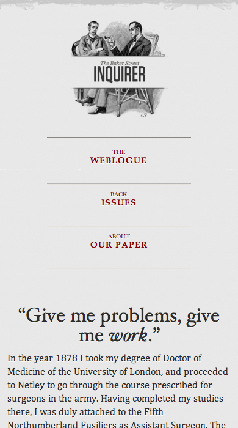
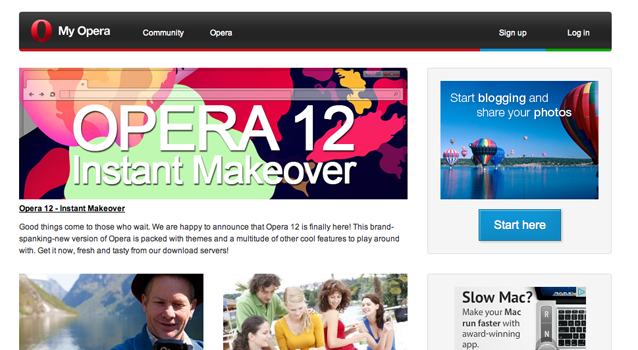
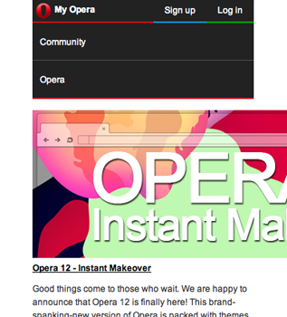

Responsive
Beyond Layouts
by Eric Bollens
The Web is Flexible
The control which designers know in the print medium... is simply a function of the limitation of the printed page.
We should embrace the fact that the web doesn't have the same constraints, and design for this flexibility.
~ John Allsopp, A Dao of Web Design
Why Do We Care?
First there was the desktop... then there was mobile... and now watches, widescreens, and everything inbetween
Fully-capable browsers have become pervasive
Changing perceptions of how mobile is used
Responsive Web Design
Website transforms to fit the user's
needs and capabilities
Up to this point,
a focus on the viewport
But many other factors to consider
Responsive Layouts
 |
 |
 |
Flexible Grid
target ÷ context = result
|
|
Breaking the Flexible Grid
Still has limits
Small screen
constricts content
Large screen
isolates content
Media Queries
|
|
Flexible Media
Images and video have explicit pixel sizes
|  |  |
img { max-width: 100%; }img, embed, object, video { max-width: 100%; }Viewport Tag
Mobile browsers assume desktop pages
but the viewport tag lets us specify otherwise
<meta name="viewport" content="width=device-width,initial-scale=1">Recap
Flexible Grid
Proportional design with percentages, not pixels
Media Queries
Application of styles at particular dimensions
Responsive Media
Images and video that scale to fit their container
Viewport Definition
Specify dimensions for the viewport
There's more we should consider...
Extending Responsive Layouts
Media Queries
Most commonly...
@media (max-width: 480px) { /* ... */ }But often more effective...
@media (min-width: 481px) { /* ... */ }For high resolution displays...
@media (min-resolution: 300dpi) { /* ... */ }And more Media Queries
media_feature: width | min-width | max-width | resolution | min-resolution | max-resolution | height | min-height | max-height | device-width | min-device-width | max-device-width | device-height | min-device-height | max-device-height | aspect-ratio | min-aspect-ratio | max-aspect-ratio | device-aspect-ratio | min-device-aspect-ratio | max-device-aspect-ratio | color | min-color | max-color | color-index | min-color-index | max-color-index | monochrome | min-monochrome | max-monochrome | scan | grid
expression: ( <media_feature> [: <value>]? ) media_query: [[only | not]? <expression> [ and <expression> ]* | <media_type> [ and <expression> ]*]
media_type: all | print | screen | aural | braille | handheld
| projection | tty | tv | embossed
media_query_list: <media_query> [, <media_query> ]*
Using ems for Breakpoints
@media (min-width: 641px) { /* ... */ }for windows or screens of particular width ranges,
we want to flow our content in a particular way
But is this the right approach?
What happens when the baseline is not 14pt/16px?
@media (min-width: 40.0625em) { /* ... */ }
Identical behavior for default text size
Friendly to assisted users who scale text size up
Support high density devices that report larger pixel sizes
@supports
CSS Conditional Rules Module Level 3
@supports (display: flex) {
div { display: flex; }
}@supports (-webkit-box-shadow: 0 0 2px #000) or
( -moz-box-shadow: 0 0 2px #000) or
( box-shadow: 0 0 2px #000) {
div { /* .. */ }
}CSS.supports("display", "flex");CSS.supports("(transform-origin: 5% 5%)");CSS.supports("(transform-origin: 5% 5%) and (display:flex)");Available in Chrome 28, Firefox 17 and Opera 12.1
and polyfill github.com/kjarmicki/fq-polyfill
Viewport
<meta name="viewport" content="width=device-width">
The viewport meta tag is non-normative
De facto standard introduced by iOS
Today, in Safari Mobile, Firefox for Mobile & Opera Mobile
HTML is the wrong place for this
"By separating the presentation style of documents from the content of documents, CSS 2.1 simplifies Web authoring and site maintenance."
@viewport
CSS Device Adaptation
@viewport { width: device-width; }@media screen and (max-width:400px) {
@viewport { width: device-width; }
}Currently only supported in IE and Opera with vendor prefixing
@media screen and (max-width:400px) {
@-ms-viewport { width:320px; }
@-o-viewport { width: device-width; }
}Grid Stylesheets
TODO
User Interaction
How Do You Scroll?
Spin a scroll wheel
Drag a scroll bar
Press a scroll arrow
Slide a finger across the screen
Verbally state "scroll" and a direction
How Do You Undo?
CTRL + Z
CMD + Z
Press down and select action
Shake or swipe
Handling for Many Environments
document.addEventListener('keydown', function(e){
if( navigator.userAgent.match(/Macintosh/g) && e.which === 90 && e.metaKey ) {
doUndo();
} else if ( e.which === 90 && e.ctrlKey ){
doUndo();
}
});
if(navigator.userAgent.match(/(iPad|iPhone|iPod)/g)){
window.addEventListener('shake', function(e){
doUndo();
});
}
(function (window, document) {
function Shake() {
//feature detect
this.hasDeviceMotion = 'ondevicemotion' in window;
//default velocity threshold for shake to register
this.threshold = 15;
//use date to prevent multiple shakes firing
this.lastTime = new Date();
//accelerometer values
this.lastX = null;
this.lastY = null;
this.lastZ = null;
//create custom event
if (typeof document.CustomEvent === "function") {
this.event = new document.CustomEvent('shake', {
bubbles: true,
cancelable: true
});
} else if (typeof document.createEvent === "function") {
this.event = document.createEvent('Event');
this.event.initEvent('shake', true, true);
} else {
return false;
}
}
//reset timer values
Shake.prototype.reset = function () {
this.lastTime = new Date();
this.lastX = null;
this.lastY = null;
this.lastZ = null;
};
//start listening for devicemotion
Shake.prototype.start = function () {
this.reset();
if (this.hasDeviceMotion) { window.addEventListener('devicemotion', this, false); }
};
//stop listening for devicemotion
Shake.prototype.stop = function () {
if (this.hasDeviceMotion) { window.removeEventListener('devicemotion', this, false); }
this.reset();
};
//calculates if shake did occur
Shake.prototype.devicemotion = function (e) {
var current = e.accelerationIncludingGravity,
currentTime,
timeDifference,
deltaX = 0,
deltaY = 0,
deltaZ = 0;
if ((this.lastX === null) && (this.lastY === null) && (this.lastZ === null)) {
this.lastX = current.x;
this.lastY = current.y;
this.lastZ = current.z;
return;
}
deltaX = Math.abs(this.lastX - current.x);
deltaY = Math.abs(this.lastY - current.y);
deltaZ = Math.abs(this.lastZ - current.z);
if (((deltaX > this.threshold) && (deltaY > this.threshold)) || ((deltaX > this.threshold) && (deltaZ > this.threshold)) || ((deltaY > this.threshold) && (deltaZ > this.threshold))) {
//calculate time in milliseconds since last shake registered
currentTime = new Date();
timeDifference = currentTime.getTime() - this.lastTime.getTime();
if (timeDifference > 1000) {
window.dispatchEvent(this.event);
this.lastTime = new Date();
}
}
this.lastX = current.x;
this.lastY = current.y;
this.lastZ = current.z;
};
//event handler
Shake.prototype.handleEvent = function (e) {
if (typeof (this[e.type]) === 'function') {
return this[e.type](e);
}
};
//create a new instance of shake.js.
var myShakeEvent = new Shake();
myShakeEvent && myShakeEvent.start();
}(window, document));And how about tap highlight undo?
Goals of IndieUI
Make it easier for web developers to author consistently usable interfaces that are input-agnostic and independent of a user's particular platform, hardware, locale, and preferences.
Enable every type of control in these interfaces to be programmatically determinable and controllable by both mainstream and alternate forms of user input, including assistive technologies.
Provide a clear path for web developers to smoothly transition from currently existing physical events to IndieUI events, during the period when implementations of IndieUI are incomplete.
UndoRequest
element.addEventListener('dismissrequest', function(){
doUndo();
});
No keypress detection
No UA sniffing or OS consideration
No complex hacks to detect interaction
No undetectable actions
UI Request Events
undorequest
redorequest
expandrequest
collapserequest
dismissrequest
deleterequest
UI Manipulation & Change Events
moverequest
panrequest
rotationrequest
scrollrequest
zoomrequest
valuechangerequest
Considering the Environment
Ambient Light
Adapt to the luminosity of the environment
@media (light-level: normal){ body { background-color: #ddd; color: #333; } }
@media (light-level: dim) { body { background-color: #000; color: #ddd; } }Change simulation or game conditions based on environment
window.addEventListener('devicelight', function(e) {
/** change environment based on e.value from [0,100] **/
});
Even adjust for the health of your user
CSS Media Queries Level 4 & Ambient Light API
Last call working draft for CSS Media Queries Level 4
devicelight only supported by Firefox 22+ for OSX
Limited polyfill opportunities
Battery Life
Battery Status API
navigator.battery || navigator.webkitBattery || navigator.mozBattery
Properties for charging, current level and discharge time
Events when properties change
Why do we care?
Minimize the frequency of radio wakes
Adjust colors to minimize battery drain
Network Information API
(that wasn't)
Proposal for an API with bandwidth and metered properties
var i = document.getElementById('ex'), connection = document.connection;
if (connection.bandwidth > 2 && !connection.metered) {
i.src = "/ex_hd.png";
} else {
i.src = "/ex_ld.png";
}But this didn't come to pass...
While working on this specification... encountered issues related to estimating network bandwidth... discontinue[d] work until better understanding of the use cases, requirements and approach...
Network Sampling
Navigation Timing API ( performanceTiming interface )

Supported in IE 9, Firefox 7, Chrome 6, Safari 8 and Opera 23
More Performance Sampling
Resource Timing API ( performanceTiming interface )
window.performance.getEntriesByType("resource")[5]User Timing API
performance.nowperformance.mark("startTask1");
someTaskToMeasure();
performance.mark("endTask1");
var perfEntries = performance.getEntriesByType("mark");Supported in IE 10, Chrome 27, Opera 23 & Android Browser 4.4
Storage Availability
HTML 5 adds a range of storage mechanisms
Web Storage, Application Cache, FileSystem API & Indexed Database
Quota Management API
Get quota
Request larger quota
TODO: Recap for explanation of when and why with a word of caution
Client-side Images
Problems
Performance
Quotas
Viewport
srcset
Define a set of images with physical dimensions
<img srcset="ex-200.jpg 200w,
ex-400.jpg 400w,
ex-800.jpg 800w,
ex-1600.jpg 1600w"
src="ex-400.jpg" alt="Example">
Browser selects image best suited for viewport and layout
Chicken and Egg
How does browser determine which image to load?
Viewport Dimensions
Page Layout
Image Dimensions
Other Assets
Cyclical dependency problem
srcset + sizes
Provide a hint for the expected dimensions
<img srcset="ex-200.jpg 200w,
ex-400.jpg 400w,
ex-800.jpg 800w,
ex-1600.jpg 1600w"
sizes="(max-width: 30em) 100vw,
(max-width: 50em) 50vw,
calc(33vw - 100px)"
src="ex-400.jpg" alt="Example">Key-value pairs
Find first matching media condition
Use value as the assumed image width
Assumes 100vw if no sizes set
Art Direction
img[srcset] for variable-width images
Might want to control more...
Proportions
Crop Area
Text Location
Shot Angle
Picture
Define images by explicit media queries
<picture>
<source media="(min-width: 45em)" srcset="large.jpg">
<source media="(min-width: 32em)" srcset="med.jpg">
<img src="small.jpg" alt="Example">
</picture>
Uses srcset instead of src
img does the heavy lifting
Style img as usual
Graceful fallback
Source Media Types
Like audio and video, picture supports source media types
<picture>
<source type="image/webp" srcset="ex.webp">
<source type="image/vnd.ms-photo" srcset="ex.jpxr">
<img src="ex.jpg" alt="Example image">
</picture>Browser Support
img[srcset]
Chrome 34, Opera 21, Safari 8, Firefox 32 (if enabled)
picture
Chrome 38, Opera 25, Firefox 33, next Safari version
A polyfill for both...
scottjehl.github.io/picturefill
Server-side Asset Selection
Server-side Images
Sometimes image markup cannot be influenced
Content management systems
Third-party applications
Acting as network / middleware
Gather device telemetry & compress appropriately
UA Sniffing with Static Metadata
Dimensions Cookie from Javascript
Client Hints
Proposed set of HTTP request header fields
just as the Accept header allows clients to indicate what formats they prefer, Client Hints allow clients to indicate a list of device and agent specific preferences
Motivating use cases
Device pixel resolution (DPR)
Resource width (RW)
Client Hints Example
GET /img.jpg HTTP/1.1
User-Agent: Awesome Browser
Accept: image/webp, image/jpg
DPR: 2.0
RW: 160HTTP/1.1 200 OK
Server: Awesome Server
Content-Type: image/jpg
Content-Length: 124523
Content-DPR: 2.0
Vary: DPR, RW
(data)Client Hints Availability
To succeed, Client Hints needs....
CH transport in browsers
Key implementations
Vary adoption
Unfortunately, work on Client Hints is struggling
Browser makers are hesitant about "content negotiation"
CDNs have not yet added support for Vary:CH
Adaptive Bitrate Streaming
Adjust video stream quality based on user telemetry
Network bandwidth
Device capacity
Implementation approach
Encode a stream at multiple bit rates
Chunk each stream into set of segments
Client requests stream at lowest bit rate
If segment download time is less than viewing time, increase rate
Otherwise, if viewing time is longer, decrease rate
Apple HLS and MPEG-DASH